Email Us
Please send us an email, we would love to hear from you!

It has been a little while since the last post, but we really haven’t travelled that far via bicycle! After the whale watching tour Leigh's stomach was feeling pretty poor and it wasn’t until I said I needed an extra rest day that Annette revealed that she had a stash of antibiotics for just such ailments. After starting on that, and the self prescribed rest day, we left Guerrero Negro behind Gary and Betty. We had a slight tailwind so even though I wasn’t 100% it seemed worth moving down the very flat road.
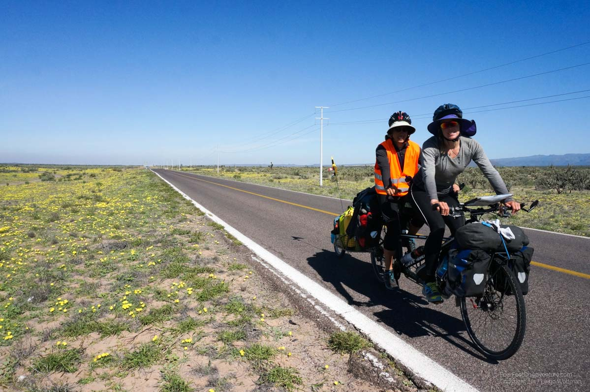
We got to the next town and found the same campground as them. They had already explored the town and found a very good bike shop a couple blocks over down some sandy side roads. For the past couple weeks, my bottom bracket (pedal arm bearing) had been creaking a little bit. The shop offered to take both off the bike, clean the threads, and tighten them back on. It seemed worth a shot, and the mechanics were eager to work on our bike. We hoped to buy a new rear cassette but they didn’t have our 10 speed variety, only 9 and 11 speed options.
The next day we continued along the flat plain of the peninsula heading for the mountains in the distance. We made it to an old missionary town called San Ignacio. Annette toured the old missionary church while Leigh volunteered to watch the bike. We found an acceptable campground with WiFi to do some work, and spent the night. Early the next morning we were up pushing up the mountain pass towards our first meeting with the Gulf of California at Santa Rosilia. We crept up in the shadow of a dormant volcanic cone, and eventually found ourselves going down what can be translated to as the “devil’s grade”. This is apparently the steepest hill on the Baja highway and we were very happy to be going down it!
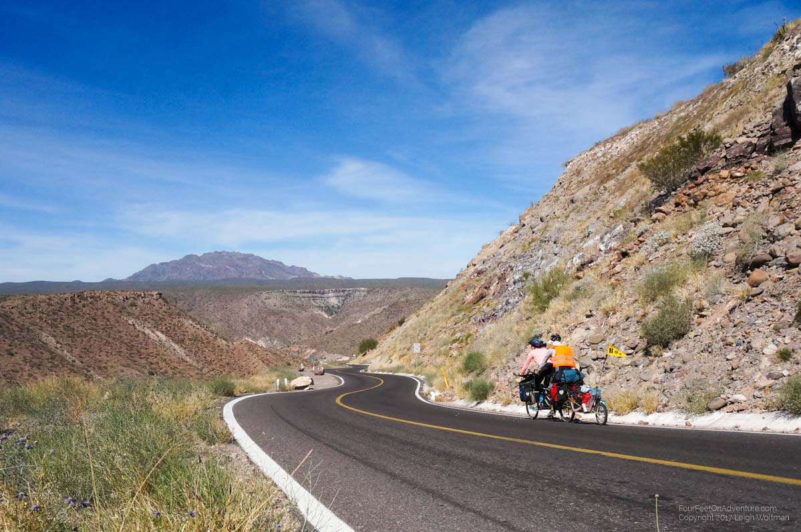
Santa Rosalia was our expected destination of where Annette would wait out Leigh's trip back to Canada. However, upon arriving, we found that the town was based around a large mine, and while parts of it were charming, it seemed a little dirty and industrial. We decided to try and make it one more town. If we made it halfway that evening, we could try and do an early bike ride the next day and I could catch the afternoon bus south. That night we camped at an oceanside campground. It was nice to be beside the ocean, but I don’t think either of us noticed much as we were tired from the really long day of biking.
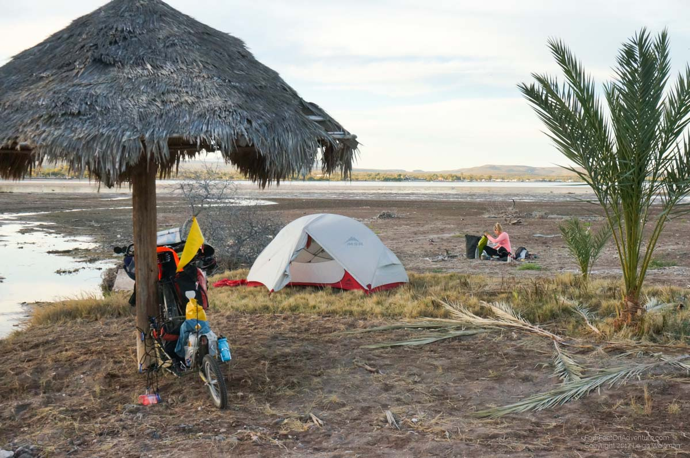
The next morning, we had an early spin towards the town of Mulege. Without any difficulties, we found a hotel in this town, and determined where the bus stops. However, we ran into the issue with ATMs again. The ATM in this town doesn’t accept our card. We purchase a ticket for the bus and Annette takes all our remaining Mexican pesos. I’m heading to a much bigger town so I just take the emergency US dollars. The bus ride is only 3 hours, and I get to town in the late evening. From there, I find the only ATMs in town refuse to work with my card again. I’m forced to spend American dollars at a terrible exchange rate for both my hotel and dinner. The Lonely Planet guidebook recommendation for a budget hotel is full, so I find another one. It turns out to right beside the missionary church in town. I didn’t think this was a problem, until I found out that every quarter hour it played a chime on the bell, and on the hour played a little tune. I could not figure out why this was necessary!
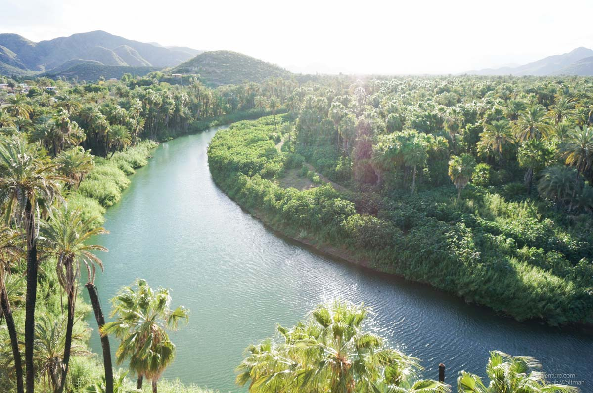
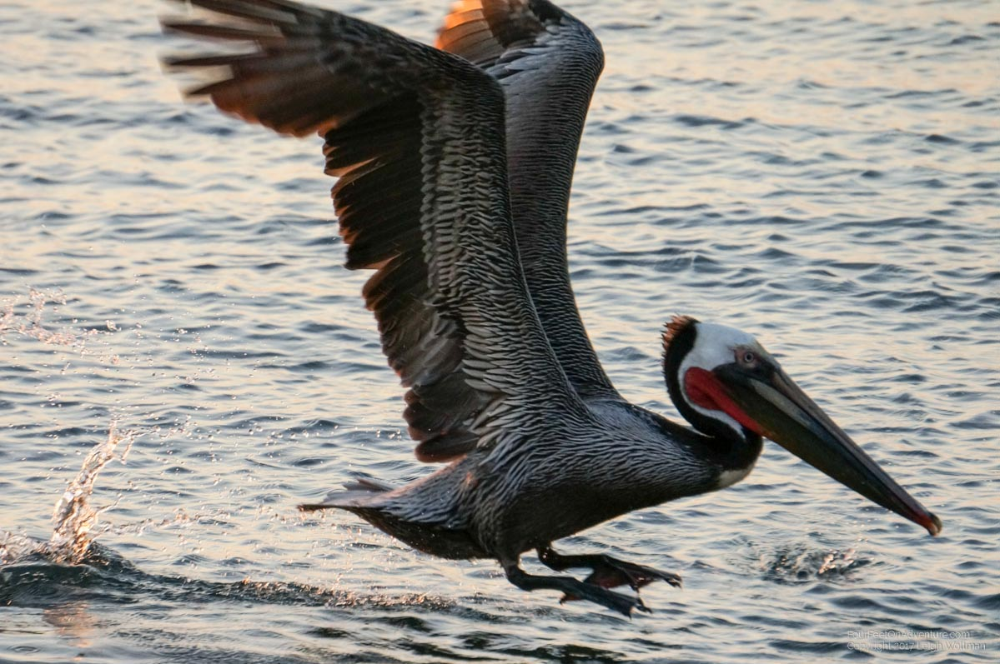
The next morning I walked to the airport which served just a couple international airlines. It was a modern building but based upon the design of a corrugated steel farm shed. No gates here, this was just walk across the tarmac to the waiting jet which would shortly be on route to Calgary as the first Canadian stop.
Canada was a quick experience, visiting friends and colleagues in between snowstorms. I got to spend the time there with my friend who rents a house right out on the entrance to Halifax Harbour. We had 180 degree views of the ocean as the biggest snowstorm of the week gave us above hurricane strength gusts and winds that came just a couple kilometers shy of being called a hurricane. Power and communication lines were ripped off the house. Much of the trip was spent shopping. Based upon our previous experience with the chain breaking we decided to carry some more spare parts. We know have a full set of new tires, a drive chain, a cassette, a small chain ring, a tandem length shift cable and a bottom bracket.
My trip back took me through Toronto and then overnight in Houston. The next morning, I flew to the very southern tip of Baja where I finally found a working ATM and then boarded a bus up to La Paz. In La Paz I decided to take the overnight bus north to meet Annette. It saved a hotel but I probably would have been better rested to spend the night in La Paz. Fortunately, a fellow campground stayer lent Annette a car to come pick me up so she didn’t have to wait outside at 3AM as my bus was delayed for 30 minutes at the military checkpoint. Going through this, I didn’t realize what was happening as the directions were all in Spanish but the bus stopped at the checkpoint and one of the armed soldiers got on and walked to the back of the bus. At this point, people slowly picked up their bags and walked off the bus. It was eventually explained that I would have to do the same thing. What happened next was everyone had to open their bags and an armed soldier looked inside. They wanted to see each of my bags but really only gave it a cursory look. They didn’t even ask to open my camera case. While this was going on, the soldier on the bus was searching inside the bus. Once all bags were done, we were allowed to board again. However, the bus also carries courier packages and the soldiers then opened each package and inspected the contents. They had box cutters and more packing tape to seal the boxes again so this was a common activity. Some boxes were clearly a pharmacy shipment and they even opened some pill bottles, shaking the contents of others. A couple drugs were in droppers and they even dropped a few drops on the table to smell them. All in all, everything checked out and was finally sealed up and the bus was allowed to leave.
After 12 hours of bus travel and two days of planes, I was pretty out of it. I rested the first few days in Mulege to get ready for biking again. Of course, one had to take in the annual pig races. A rotary club in town organizes the event and they race 9 piglets, 3 at a time, down a racetrack where the piglets follow a wire connected to a dog harness they are wearing. Formal betting adds to the excitement. Informally, I won an ice cream for picking the winner but I don’t think my bookie ever paid up :)
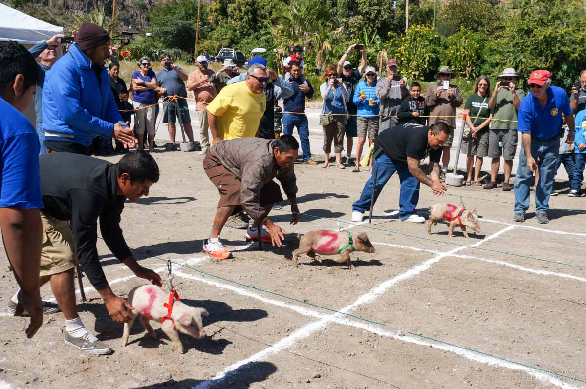
However, after a couple of days I woke up with a fever in the middle of the night which lasted a little over 24 hours. Definitely some type of virus as I lay in the tent for 2 days solid. This meant more days to recover, and while Annette was getting out running and snorkelling, she was definitely showing signs of becoming stir crazy. Given all this extra time, we were again running out of money given that we knew the banks ahead in Loreto wouldn’t work for us. We found the grocery store with their purchase machine would inflate the cost of our purchase against our credit card and give us the change in pesos for a 3% fee. It worked for us, although is definitely against their merchant rules!
Before we left, we took an afternoon paddle on the campground’s tandem sit-on-top kayak. Annette was able to hop off along the way to snorkel and look at fish.
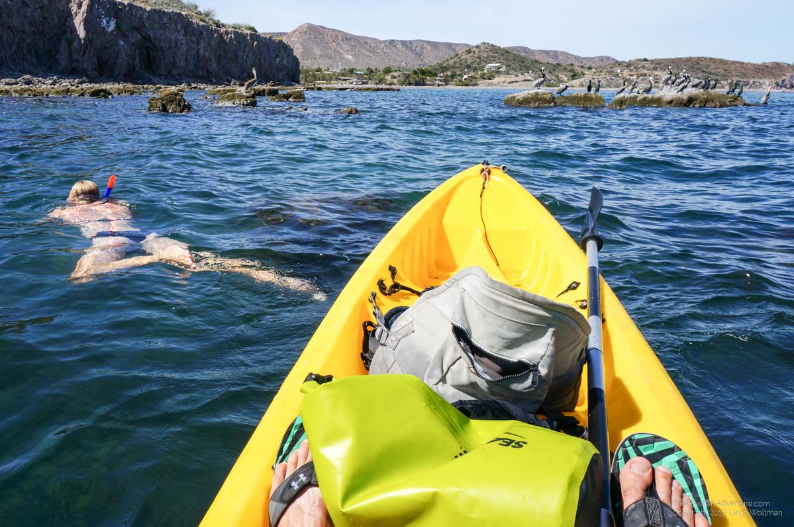
It took us a while to pack up as our stuff had been stationary for almost 3 weeks, and our usual sense of known order had slowly disappeared. We slowly pedaled the bike, creaking under a fresh load of supplies south.
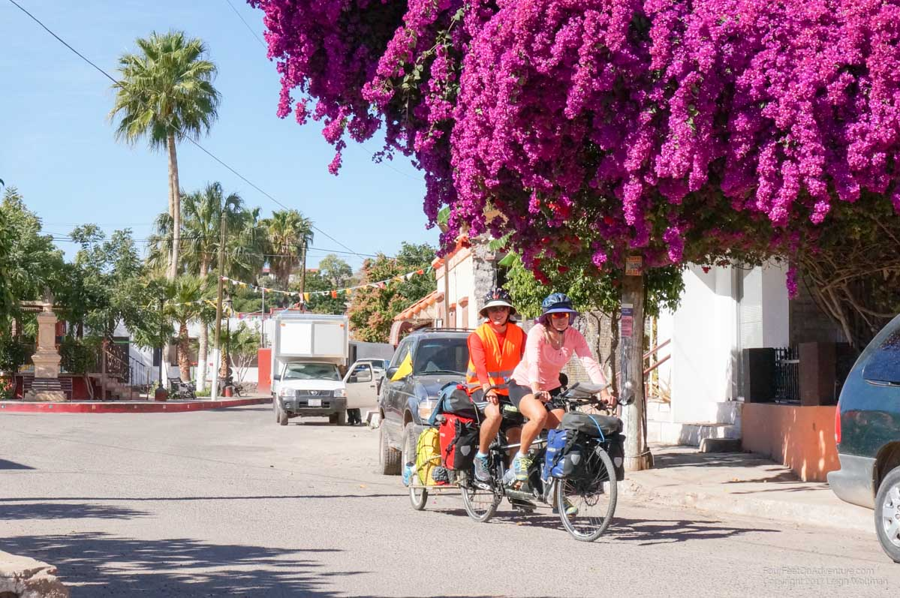
We didn’t get to far until we were in the beaches of Baie de Concepcion, which has the classic views of sandy beaches with RVs and campers parked right along the edge of the water.
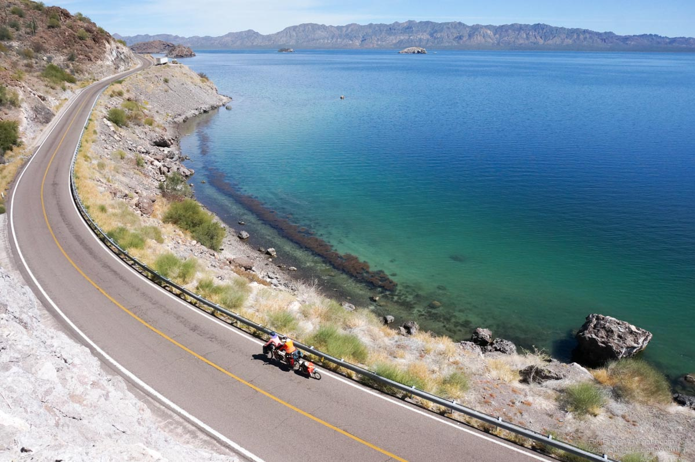
Here we found a campsite with a little thatched roof hut beside the ocean. We waded out into the sandy shallows as schools of fish swamp by and stingrays sailed over the sand when they were startled. To our luck, our nearest neighbour and their neighbour were both from British Columbia and each having nice kayaks offered for us to go for an afternoon paddle! To continue this luck, they even had a Tempest 170 which was the exact boat I sold in Nova Scotia before this trip - it was of course, a perfect fit. We paddled for a couple hours, first out to one island and then onto another. Along the way we found a dead animal washed up on shore with a flock of red-headed vultures perched around. Further into the paddle, we found a dead bird floating in the sea which turned out to be a new species we’ve only noticed in the last couple of days, a frigate. The dead bird was only recently dead as it was still in perfectly good shape, still looking like the pterodactyl.
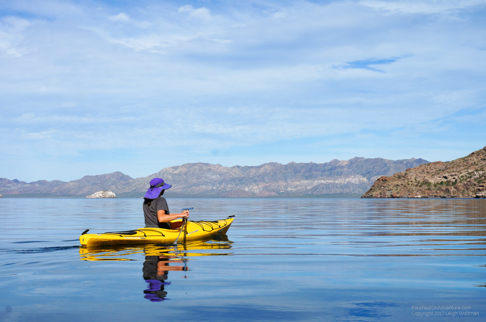
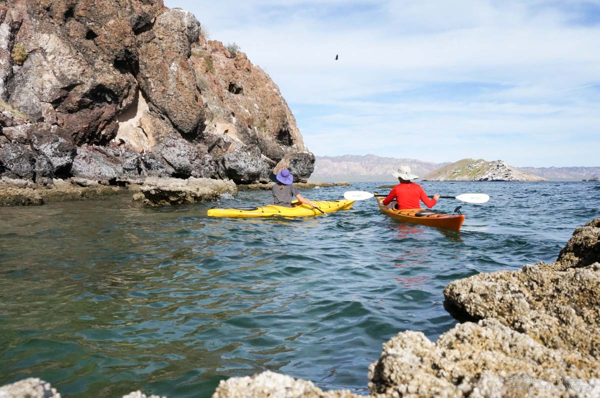
The next morning Annette joined the daily sunrise yoga with the BCers and we again hit the road. We pedaled along the Baie de Concepcion until we reached its end and started a climb out of its mountainous sides. A slight tailwind meant we were making good progress, but not good enough to make it all the way to Loreto. That evening, we found a gravelly wash to sneak into for the night camp. The next morning, we continued towards Loreto again with a favourable wind. There was one significant hill between us and there, with an otherwise flat journey. Upon reaching the top of the hill, and starting the descent, we were quickly alerted to a punctured back tire. Of course it is a little bit of work to unload the bike to get to the rear tire, and after finding a thorn poking through our tube we decided to tune up the rear gear shifting while we were there. Re-mounting the bike, Annette quickly remembered she had wanted the front brake tuned up too. Her wish was answered, as within 800 metres our front tire went flat, the first time for this tire. At this point we were glad to be carrying a full set of new tires as our days on these ones are probably numbered. We also found out that one set of patches we have appears to be duds, they no longer adhere so we have a new item to search for in La Paz. Closer inspection of our front tire, showed about 10 other thorns in it which we removed. We made a note to give the rear a more thorough check as its thorn was probably not isolated to one. With a tuned brake and air in the tires we continued to roll down into Loreto.
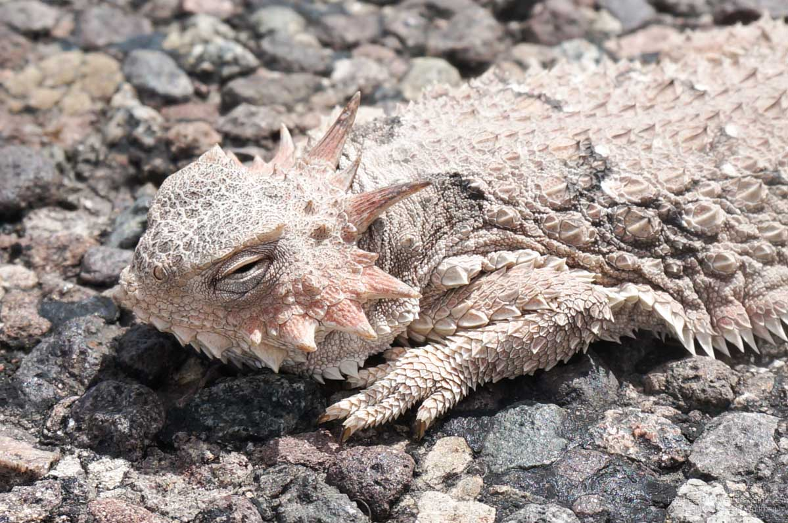
Loreto gave us a campground in town which allowed us to pick up groceries and plan a lazy morning tomorrow, after which we will probably head to another beach campsite in anticipation of the big climb the following day as the highway turns inland. This won’t be as big as the hills in Utah but is apparently the biggest hill on the Baja when cycling in this direction.
Please send us an email, we would love to hear from you!